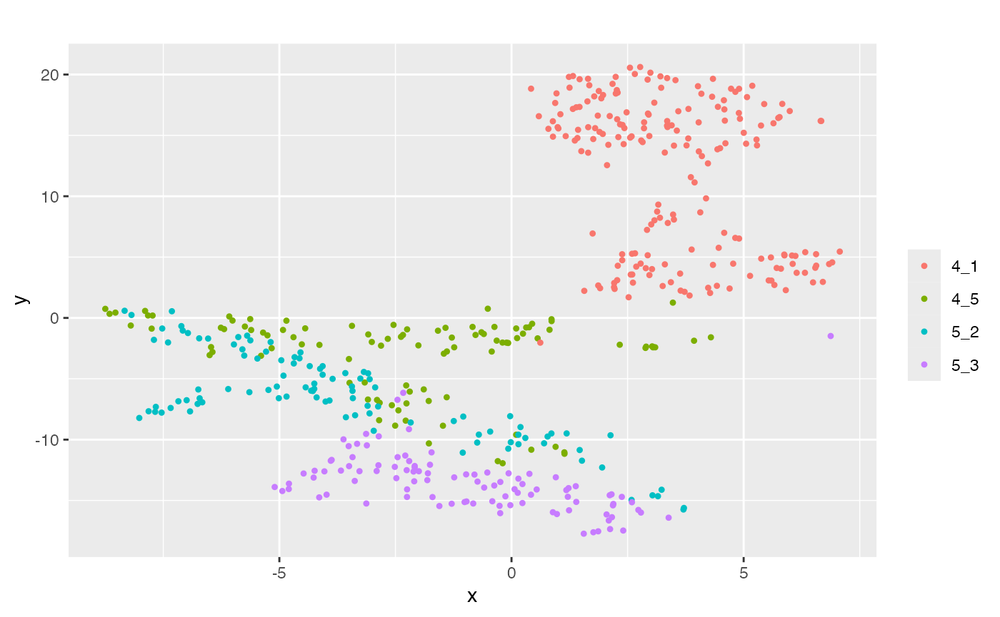

This article introduces the basic workflow of
scMultiSim.
A typical workflow consists these three main steps:
- Simulate the true counts;
- Add technical noise to the dataset;
- Add batch effects.
divide_batches(results, nbatch = 4)Step 1: Simulate true counts
Call the sim_true_counts function to simulate the true
counts. It accepts a list of options as input. This
sim_true_counts is the most important step, and you are
able to control most of the simulated effects here.
data(GRN_params_100)
results <- sim_true_counts(list(
# required options
GRN = GRN_params_100,
tree = Phyla5(),
num.cells = 500,
# optional options
num.cif = 50,
discrete.cif = F,
cif.sigma = 0.1,
do.velocity = T
# ... other options
))
#> Time spent: 0.14 minsscMultiSim requires users to provide the following options:
-
GRN: The Gene Regulatory Network. If the GRN effect is unneeded, ProvideNA. -
tree: The cell differential tree. If the cell trajectory is unimportant, simply usePhyla1()to generate a linear tree.
scMultiSim provides several example GRN and trajectory data: - GRN:
GRN_params_100 and GRN_params_1139 - Tree:
Phyla5(), Phyla3() and
Phyla1()
You can visualize these data as below:
plot_grn(GRN_params_100)
plot_phyla(Phyla5())
Typically, you may also want to adjust the following options to control the basic cell population:
-
num.cells: Specify the number of cells. -
unregulated.gene.ratioornum.genes: Control the total number of genes. -
discrete.cif: Whether generating discrete or continuous cell population. -
diff.cif.fraction: Control the contribution of the trajectory/cluster specified by the tree. -
cif.sigma: Control the variation of cells along the trajectory.
Effects of some common options
Here, we provide a quick guide on adjusting the effect of each biological factors:
diff.cif.fraction
Controls the balance between trajectory and GRN.
| Higher Value | Lower Value |
|---|---|
| Clear trajectories / cluster boundaries | Vague trajectories / cluster boundaries |
| Trajectory determined by the tree | Trajectory determined by other factors, e.g., GRN |
cif.sigma
Controls the noise along trajectory.
| Higher Value | Lower Value |
|---|---|
| Vague trajectories / cluster boundaries | Clear trajectories / cluster boundaries |
| Cells stick to the trajectory | More randomness in the trajectory |
intrisic.noise
Controls the randomness added during sampling mRNA counts, therefore also affecting the trajectory shape.
| Higher Value | Lower Value |
|---|---|
| Clear trajectories / cluster boundaries | Vague trajectories / cluster boundaries |
| Expression contains more noise | Expression directly computed from kinectic parameters |
The Shiny app
Don’t forget that scMultiSim provides a Shiny app to help you explore
the options interactively. Simply run run_shiny() to start
the app.
Return value
The return value will be a scMultiSim Environment
object, and you can access various data and parameters using the
$ operator.
print(names(results))
#> [1] ".grn" "unspliced_counts" ".options" ".n"
#> [5] "region_to_gene" "atacseq_data" "giv" "kinetic_params"
#> [9] "num_genes" "velocity" "cif" "hge_scale"
#> [13] "counts" "cell_meta" "atac_counts" "region_to_tf"
#> [17] "grn_params" "cell_time"
print(dim(results$counts))
#> [1] 110 500Step 2: Add technical noise
Simply use the add_expr_noise function to add technical
noise to the dataset.
add_expr_noise(
results,
# options go here
alpha_mean = 1e4
)
#> Adding experimental noise...
#> 50..100..150..200..250..300..350..400..450..500..Using atac_counts
#> Time spent: 0.41 minsA counts_obs field will be added to the
results object.
This function also accepts a list of options. See the documentation for more details.
-
protocol:"umi"or"nonUMI", whether simulate the UMI protocol. -
alpha_mean,alpha_sd: Mean and deviation of rate of subsampling of transcripts during capture step. -
alpha_gene_mean,alpha_gene_sd:alphaparameters, but gene-wise. -
depth_mean,depth_sd: Mean and deviation of sequencing depth. -
gene_len: A vector with lengths of all genes. -
atac.obs.prob: For each integer count of a particular region for a particular cell, the probability the count will be observed. -
atac.sd.frac: The fraction of ATAC-seq data value used as the standard deviation of added normally distrubted noise. -
randseed: random seed.
Step 3: Add batch effects
Finally, use the divide_batches function to add batch
effects.
divide_batches(
results,
nbatch = 3,
effect = 0.5
)
#> Adding batch effects...A counts_with_batches field will be added to the
results object.
The available options are:
-
nbatch: Number of batches. -
effect: The batch effect size.
Data available in the result
scMultiSim returns an environment with the following fields:
-
counts: Gene-by-cell scRNA-seq counts. -
atac_counts: Region-by-cell scATAC-seq counts. -
region_to_gene: Region-by-gene 0-1 marix indicating the corresponding relationship between chtomatin regions and genes. -
atacseq_data: The “clean” scATAC-seq counts without added intrinsic noise. -
cell_meta: A dataframe containing cell type labels and pseudotime information. -
cif: The CIF used during the simulation. -
giv: The GIV used during the simulation. -
kinetic_params: The kinetic parameters used during the simulation. -
.grn: The GRN used during the simulation. -
.grn$regulators: The list of TFs used by all gene-by-TF matrices. -
.grn$geff: Gene-by-TF matrix representing the GRN used during the simulation. -
.n: Other metadata, e.g..n$cellsis the number of cells.
If do.velocity is enabled, it has these additional
fields:
-
unspliced_counts: Gene-by-cell unspliced RNA counts. -
velocity: Gene-by-cell RNA velocity ground truth. -
cell_time: The pseudotime at which the cell counts were generated.
If dynamic GRN is enabled, it has these additional fields:
-
cell_specific_grn: A list of lengthn_cells. Each element is a gene-by-TF matrix, indicating the cell’s GRN.
If cell-cell interaction is enabled, it has these additional fields:
-
grid: The grid object used during the simulation. -
grid$get_neighbours(i): Get the neighbour cells of celli. -
cci_locs: A dataframe containing the X and Y coordinates of each cell. -
cci_cell_type_param: A dataframe containing the CCI network ground truth: all ligand-receptor pairs between each pair of cell types. -
cci_cell_types: For continuous cell population, the sub-divided cell types along the trajectory used when simulating CCI.
If it is a debug session (debug = TRUE), a
sim field is available, which is an environment contains
all internal states and data structures.
Visualize the results
scMultiSim provides various visualization functions to help you understand the simulated data.
plot_tsne visualizes the cells using t-SNE.
plot_tsne(results$counts, results$cell_meta$pop)
There are more visualization functions available in the package, such as:
-
plot_gene_module_cor_heatmap: Plot the correlation heatmap of genes. -
plot_rna_velocity: Plot the RNA velocity. -
plot_cell_loc: Plot the cell locations in simulated spatial data.
Please check out the reference page for more information.